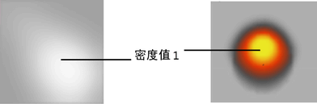
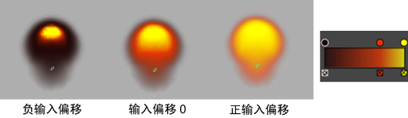

利用某些流体属性的渐变，可以在渲染时将原始流体属性重映射到所用的值中。以下流体属性被设定为使用渐变：
-
环境(Environment)
-
颜色(Color)
-
白炽度(Incandescence)
-
不透明度(Opacity)
- 海洋着色器/纹理节点上的“波高度”(Wave Height)
设定属性渐变
- 在场景视图中，选择要设定属性渐变的流体对象。
- 在“属性编辑器”(Attribute Editor)中，选择“fluidShape”选项卡。
- 在“属性编辑器”(Attribute Editor)中，找到要设定的属性渐变，然后设定“选定位置”(Selected Position)和“选定值”(Selected Value)的值以创建渐变。
有关设置渐变值的详细信息，请参见使用渐变设置属性。
- 设置“插值”(Interpolation)方法以指定渐变中每个“选定位置”(Selected Position)（点）之间值的融合方式。
- 设定渐变的输入来指定用于映射输入属性值的流体特性。
例如，下面是一个被映射到“密度”(Density)的黑色、橙色和黄色灰度渐变和颜色渐变：

- 设定渐变的“输入偏移”(Input Bias)。
